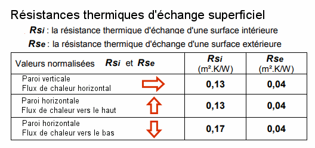

Exercice 1
Calculer le coefficient de transmission thermique U d'une paroi extérieure constituée des éléments suivants (de l'intérieur vers l'extérieur) :
- Enduit plâtre : épaisseur = 14 mm, \( \lambda \) = 0,571 W/m.K
- Parpaing creux : épaisseur = 20 cm, \( \lambda \) = 0,93 W/m.K
- Laine de verre (LDV) : épaisseur = 17 cm, \( \lambda \) = 0,04 W/m.K
- Enduit hydraulique : épaisseur = 15 mm, \( \lambda \) = 0,93 W/m.K
- Lame d'air: épaisseur = 29mm , R = 0,167 m².K/W
- BA13 : épaisseur = 13mm, \( \lambda \) = 0,30 W/m.K
On prendra les valeurs de résistance thermique d'échange superficiel de la norme NF EN 12831 :
Présentez les résultats avec 3 chiffres après la virgule.
Exercice 1
1. Calcul des résistances thermiques de chaque couche :
\( R = \frac{e}{\lambda} \) (où \( e \) est l'épaisseur en mètres et \( \lambda \) la conductivité thermique)
- \( R_{enduit\ plâtre} = \frac{0.014}{0.571} = 0,025 \) m².K/W
- \( R_{parpaing} = \frac{0.20}{0.93} = 0,215 \) m².K/W
- \( R_{LDV} = \frac{0.17}{0.04} = 4,25 \) m².K/W
- \( R_{enduit\ hydraulique} = \frac{0.015}{0.93} = 0.016 \) m².K/W
- \(R_{lame\ d'air} = 0,167\) m².K/W
- \(R_{BA13} = \frac{0.013}{0.30} = 0.043 \) m².K/W
2. Calcul de la résistance thermique totale de la paroi :
Paroi verticale donc \( R_{si} = 0,13 \) et \( R_{se} = 0,04 \)
\( R_{totale} = R_{si} + R_{enduit\ plâtre} + R_{parpaing} + R_{LDV} + R_{enduit\ hydraulique} + R_{lame\ d'air} + R_{BA13} + R_{se} \)
\( R_{totale} = 0.13 + 0.025 + 0.215 + 4.25 + 0.016 + 0.167 + 0.043 + 0.04 = 4,886 \) m².K/W
3. Calcul du coefficient de transmission thermique U :
\( U = \frac{1}{R_{totale}} \)
\( U = \frac{1}{4.886} = 0.205 \) W/m².K
Exercice 2
Un mur est constitué de briques pleines de 22 cm d’épaisseur. Sa conductivité thermique \(λ\) est de 1,15 W/(m.K). On souhaite ramener le coefficient de transmission thermique U de ce
mur à \(0,5\) \(W/m².K\) en utilisant un isolant de conductivité thermique (λ) de 0,04 W/(m.K).
Calculer l’épaisseur d’isolant à ajouter.
Exercice 2
1. On calcule la résistance thermique de la paroi de brique :
\(R_{brique} = \frac{e}{\lambda} = \frac{0.22}{1.15} = 0.191\) m².K/W
2. On cherche la résistance thermique totale de la paroi pour atteindre notre objectif :
\(R_{totale} = \frac{1}{U} = \frac{1}{0.5} = 2\) m².K/W
Paroi verticale donc Rsi= 0,13 et Rse= 0,04
3. On calcule la résistance thermique que l'isolant doit apporter:
\( R_{isolant} = R_{totale} - (R_{si} + R_{se} + R_{brique}) \)
\(R_{isolant} = 2 - (0.13+ 0.04 + 0.191) = 1.639 \) m².K/W
4. On calcule l'épaisseur de l'isolant:
\(e_{isolant} = R_{isolant} \times \lambda_{isolant} = 1.639 \times 0.04 = 0.066\) m soit 6,6 cm.